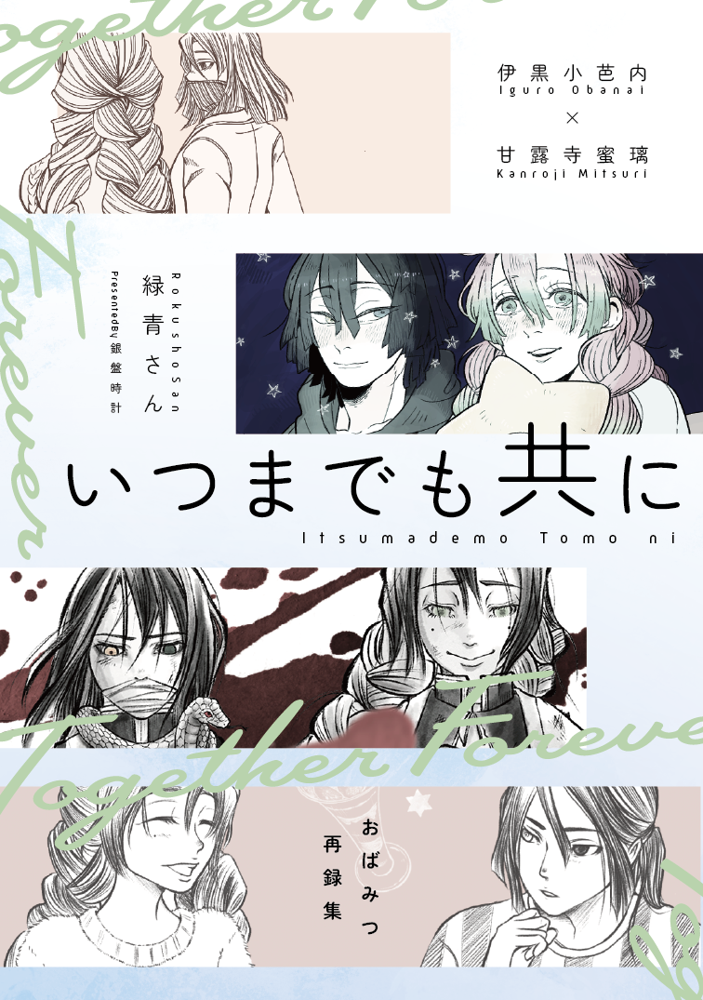

いつまでも共に
#kmt #おばみつ #再録

2025年6月15日発行。
映画三部作と柱展よかった記念で再録した本。
はるのうた
#original
2025年5月11日発行。
創作BL 英黒斗（はなぶさ こくと）と黒井澄（くろい すみ）の話。
職場で受けた問いを、澄は黒斗へと投げつけた。黒斗の返事を待ちながら、静かに鍋からよそっていく。
なんてことはない、ただ問答するだけの話。
ほんものとにせものと本当のはなし。
指先のぬくもり
#original
2025年1月5日発行。
創作BL 英黒斗（はなぶさ こくと）と黒井澄（くろい すみ）の話。幼い頃にプロポーズした人を探し続けている英黒斗と、非日常を厭う黒井澄の黒髪幼馴染たちが文化祭に振り回される話。こくすみ過去編です。高2と中1。
旅も道連れ
#original
2024年1月7日発行。
創作BL 英黒斗（はなぶさ こくと）と黒井澄（くろい すみ）がスペイン村に行く二人の話。バイト先の恋愛相談や、日々の仕事の幸せを感じつつ、非日常を旅する二人の話です。朝一ピレネーはいいぞ。
エバーアフター
#original
2022年8月20日発行。
創作BL 英黒斗（はなぶさ こくと）と黒井澄（くろい すみ）の日常とすれ違いの話。
よければ一緒に
#original
2022年8月20日発行。
創作BL 英黒斗（はなぶさ こくと）と黒井澄（くろい すみ）のなれそめ話。
無幻の一瞬 三度目の死
#tjnmk
？？
コミックマーケット100 2022年8月13日発行。
人生ちゃんが推しの解釈違い本を作ると言っていたので寄稿しました。ファイルサイズ50mbまでをページ数50ページまでとわけのわからん認識をしていたのにキレました。
人生は続くので
#断裁分離
完売
2021年4月3日発行。
スタジオ五組オンリー開催にあたって、断裁分離のクライムエッジの本がないなんてあり得ないと人生ちゃんが叫んでいたので「じゃあ作ろうか」と作った本です。いい意味でも悪い意味でも需要とか全く気にしないで作ったので個人的には最高の出来だよ。
艦これ39時間(で原稿全部やる）合同
#kancolle
2020年12月20日発行。
艦これでバカがバカやるって聞いたのでバカになりました。別名義で参加しています。どれが私かな？
「いただきます」をみんなと
#kmt #おばみつ #現パロ
2020年11月15日発行。
貴様ちゃんのイベントに初めて参加しました。『「ごちそうさま」をきみと』の世界軸の小話です。だいたい結婚前のお話。下読みしてくれたフォロワーは「義勇さんの現実感がいい」と言っていました。私もそう思う。広島風って言ったらブロックするのでよろしくお願いします。
Meet to live overnight
#kmt #おばみつ #現パロ #短編集
2020年10月11日発行。どうでもいいんですが私の誕生日です。
書きたいけど本になるほどではない……みたいなお話を詰めこみました。
タイトルは「ミツリオバナイ」と読みます。英語に深い意味は無い。
乙女と青年
#kmt #おばみつ #原作軸
2020年9月13日発行。頒布開始は2020年8月25日。
9/13のおばみつオンリー、スタジオYOUだけどでも初オンリーだし……！ と思って申し込んだらイベントが延期になったのでキレて通販先行始めました。
読後感を殺す遊び紙を使えたかなと思って満足してます。買ってね。
帝國図書館の 幸福 論
#文或 #しがおだ
2020年8月22日頒布。
ハクトウ様にイラストを描いていただき、トレペカバーで地獄を演出した楽しい本です。楽しいよ。本当に楽しい。帝國図書館の閉鎖性について触れました。
What are you doing?
#文或 #おだらん #合同誌
詳しくは後書きにある。2020年6月某日発行。
心臓の形を教えて
#文或 #だざしが #アンソロ
2020年5月31発行
桜庭かすみ様のだざしが小説アンソロジーに参加させていただきました。こちらはホームページの方もご協力させていただいています。
このアンソロを切欠に、文或の沼にどっぷりとはまることになりました。
「ごちそうさま」をきみと
#kmt #おばみつ #短編集
2020年5月10日発行……予定だったんですが入稿ミスや印刷ミスで発送が遅れまくった悲しみの本です。内容としては喫茶店巡りをするおばみつが最終的に結婚する話です。
転生した親衛隊が飲みサーで駄弁る本
#tjnmk #親衛隊 #短編集
2020年4月某日発行。この後に出るおばみつ『「ごちそうさま」を君と』を書き上げてハイテンションになったため、以前から温めていた「転生したら年齢逆転してた親衛隊」と「酒を飲む親衛隊」を書きました。
Familiar
#wt #諏訪中心 #短編集
完売
2020年1月12日発行。2019年の春に突然WT全巻を送りつけられまんまと東さんにハマリ、さあ最新刊を買うぞと表紙を見たら東さんだったときの衝撃は忘れられない。あと「WT全巻送りつけられた結果本を出しました」と首から段ボールを提げたらバズったのが思い出です。
やおよろず
#tjnmk #短編集
完売
C98発行。刀使ノ巫女に関する様々な短編集。
早足で駆け抜けて
#tjnmk #短編集 #バッドエンド
完売
親衛隊四人のバッドエンドを集めた本です。C98発行。獅童真希は如何にして狂うのか、此花寿々花が狂うのはいつか、皐月夜見は何を見ているのか、燕結芽は何を見てきたのかを書いた感じです。
相楽寿々花の空模様
#tjnmk #パロディ
C97発行。学長ズが姉妹で親衛隊が従姉妹のパロディ世界線。入院している妹――結芽につきっきりで家に居ない母と、ひとりぼっちで過ごす寿々花の話です。
Not Found
#tjnmk #すずまき #IF
C97発行。すず+まきがもし前向きになれないまま未来に進んでしまったらのIFルート。pixiv再録と書き下ろしがいくつか。概ねハッピーエンドです。現地限定のアナザー版が存在します。
キラメキ華片
#tjnmk #親衛隊 #合同誌
C97発行。刀使ノ巫女、折神家親衛隊の合同誌です。頑張って編集してたんですけど「君何ページ？？？」と原稿に語りかける事案が発生してました。イラスト10人、漫画8人、小説9人でお送りしました。原稿落としたやつとかいたってマジ？まじです。クリアファイル付きまだ売ってます。
Hortus Felicitatum
#tjnmk #まいさや #合同誌
けい様主宰のC97発行のまいさや合同誌に寄稿しました。私の本を全て持っている友人が「君のメインカップリングじゃないのを知っていて言うけれどこれが最高だと思う」と寄稿した話を褒められていて複雑です。
高嶺の華達
#tjnmk #親衛隊 #合同誌
2019年3月3日、刀使ノ巫女オンリーイベントで発行。初めての合同誌だった。初めて列整理が必要なサークルになってめちゃくちゃ慌てました。在庫まだ十分です。
夢からさめたら
#tjnmk #此花寿々花中心
2019年3月3日、刀使ノ巫女オンリーイベントで発行。みんなアンソロ目当てで買いに来てるもんだと思ってたので「新刊全部下さい！」って言われたときはうれしさと困惑に襲われました。再録してます。
夢うつつでティータイム
#tjnmk #燕結芽中心 #クロスオーバー #にっかり青江
2018年8月くらいにローカル即売会にて発行。その後オンリーイベントまでちまちま通販したり売ったりして3月のオンリーイベントで完売しました。刀剣乱舞の世界では「にっかり青江」だけれど、刀使巫女の世界では「ニッカリ青江」だったので、名乗りに関してはきちんと拘っています。
あなたにはかなわない
#tjnmk #すずまき #短編集
完売
2018年7月くらいにローカル即売会にて発行。その後オンリーイベントまでちまちま通販したり売ったりしてC98で完売しました。